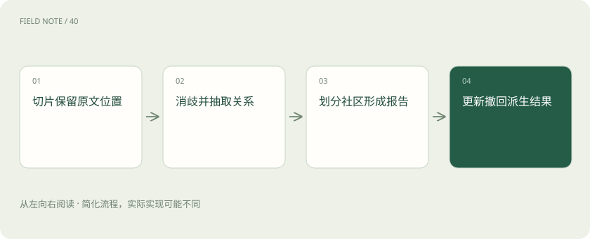
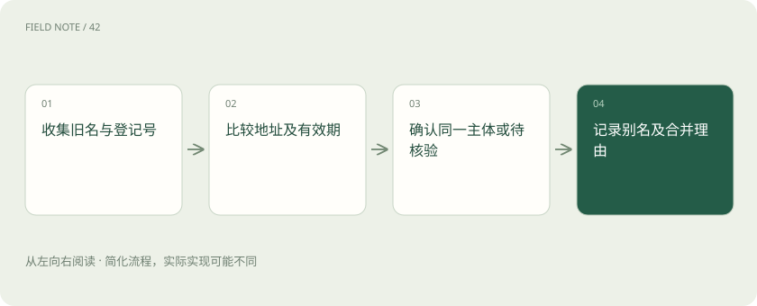

先读哪些知识
先用一个类比理解
类比只帮助建立直觉，不等同于技术的完整机制。
一图看懂

先定问题与边界
供应链审计有合同、交付单和事故记录。目标是解释同一供应商如何影响多个工厂，而非把所有名词画成漂亮网络。广义 graph RAG 是结合图结构检索的一类方法；Microsoft GraphRAG 是具体项目，包含抽取、社区和报告流程，不能把它的表结构当成全行业标准。
本章后面的撤回链和权限策略是原创工程方案，不是宣称上游默认提供完整治理。开始建图前先列三类业务问题，若都只查合同编号，维护图的额外成本可能没有回报。
切分保留出处
合同第七页写供应商旧名，第八页说明更名日期。切分必须保留文档标识、页码、版本和相邻关系，否则后续抽取得到两个名字却无法解释是否同一主体。文本单元是证据入口，图节点是组织线索；两者不能相互替代。
可给切片分配稳定标识并保存字符范围；重新切分时建立新旧映射。否则一次抽取参数变更，就可能使历史答案里的引用指向另一段内容，破坏审计连续性。
实体消歧的操作
把“华南物流”和“华南物流设备”直接合并会产生假供应链。先比较登记标识、地址、业务范围和有效期，再决定合并、保持分离或待人工核验。别名表应记录合并理由与原始名称，名称相似只能生成候选，不能单独证明身份。
例如统一社会信用代码一致且更名时间吻合，可以确认旧名和新名的连接。若只知道联系电话相同，仍可能是代理服务机构共用号码，应保留两实体与待核验标记。
图解：实体消歧的判定链

关系也有语境
“甲不再向乙供货”不能抽成当前供货关系。关系记录应能表达主体、客体、类型、时间和证据位置；否定、计划、传闻与已经发生要区分。审计时沿边回到原句，核对抽取是否遗漏限定词，避免把模型生成的关系当作事实数据库。
同一供货事实可以有两份交付单支持。保存的是关系到证据的多对多映射，而不是给边塞一个不可拆分的说明字符串，这样撤销单份文件时才知道其余依据是否还成立。
社区与报告
Microsoft 的流程会形成实体社区和多层社区报告。社区反映连接组织，不天然等于部门或真实因果群组。报告把多个片段压缩为可检索概述，也可能丢失少数例外，因此“多数厂延期”必须回看有哪些工厂、哪些月份和哪些原始交付记录。
抽查一份报告，列出每个关键判断依赖的关系与文本。若报告说某节点是共同风险中心，可能只是文档提及次数高，应把网络中心性与业务影响程度分开解释。
增量更新与删除
一份合同撤回时，仅从文件目录删除不够。先定位其文本单元，再找依赖的实体描述、关系、报告和缓存；共享关系若仍有其他证据应保留并减少出处。更新可能改变社区划分，需明确重算范围，不能假设增量写入自动解决所有派生数据一致性。
建议发布前生成依赖清单并先在影子索引演练撤回；确认旧报告不可检索后再切换版本。紧急删除还需立即阻断查询，不宜等耗时重建完成才让权限生效。
权限沿派生链传播
机密事故报告参与摘要后，即使回答不展示原文，也可能泄漏事件。设计时按可见语料建立派生结果，或给报告配置可验证的权限策略；查询过滤须覆盖节点、边、片段和报告。不能只在最后删除引用，因为敏感事实已可能进入模型上下文。
跨权限社区最容易出问题：公开供应商简介与内部事故合成后，报告无法简单沿用公开标签。可以拆开构建可见子语料，但要接受社区结构与全库结果可能不同。
图解：撤回一份证据
验收与存储选择
用已知别名、同名企业、否定关系和撤回文档构造小型验收集。检查实体精度、关系证据和删除后的可见性，再比较完整索引成本。Microsoft 默认输出包括 Parquet 表与配置的向量存储，广义图增强检索也不必然要求部署独立图数据库。
验收记录应同时统计误合并与漏合并。前者制造虚假关系，后者切断真实链路；两者对供应链追责的损害不同，不能只报一个实体匹配准确率掩盖业务代价。
放在一起对比
| 对象或路线 | 处理依据 | 适用边界或检查点 |
|---|---|---|
| 实体别名 | 登记标识与有效期 | 名称相似不足以合并 |
| 关系事实 | 原句与时间条件 | 边的存在不证明当前有效 |
| 社区报告 | 组成关系及文本单元 | 摘要不能替代原文 |
| 撤回操作 | 派生依赖及残余支持 | 删文件不等于删影响 |
放进真实场景
合同C17撤回后，关系R8还有交付单D4支持，因此保留R8并移除C17出处；仅由C17支持的关系R9失效，依赖R9的社区报告进入重算队列。
别踩这个误区
想一想
为什么撤回文档不能直接删除所有相关边？
因为一条边可能由多份文件共同支持。应沿出处依赖撤回失效支持，并检查剩余证据，避免误删仍然成立的关系。
关联阅读
资料与边界
本文为原创知识讲解。类比和图示经过简化；示例数字不代表实测或报价。整理日期：2026-11-05。文末列出对应技术的原始资料，具体功能与版本支持请以原文为准。